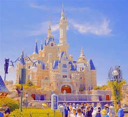

중국 상하이는 장강 동쪽 하류에 위치하고 있으며, 황푸강이 도시를 관통하여 흐른다. 2021년 기준으로 2,489만 명이 거주하고 있는 상하이는 중화인민공화국에서 인구 수가 가장 많은 도시로 3,930만명이 상하이 대도시권에 거주하고 있고, 중국 본토에서 국내총생산이 가장 높은 도시이다.
상하이는 원래 조용한 어촌 이자 시장 이 형성되는 마을이었지만, 19세기 중국 내외의 무역 증가와 상하이의 유리한 입지 덕분에 중요도가 올라가게 되었다. 1840년 제1차 아편 전쟁 이후 조약항 5개 중 하나에 포함된 상하이는 유럽 열강에 의해 강제로 개항하였으며, 상하이 공공 조계 와 상하이 프랑스 조계 가 뒤이어 상하이에 설립되었다. 1930년대 상하이는 아시아의 주요 상업 거점이자 금융 거점으로 번창하였다.
중국 상하이와 대한민국 임시정부와의 역사
대한민국의 법통을 이어받은 대한민국 임시정부도 일제강점기 당시 이곳 상하이에 신세를 지고 있었다. 신해혁명 이후 상하이는 위안스카이의 지배에 들어갔고 쑹자오런이 상하이에서 베이징으로 가는 기차에 탑승하려다가 암살되는 쑹자오런 암살 사건이 일어나기도 했다. 이후 군벌 쑨촨팡이 차지했으며 1926년 국민당의 1차 북벌이 시작되자 1927년 3월에 국민정부가 점령했다. 이후 4.12 상하이 쿠데타가 발생했고 난징 국민정부의 핵심적인 지역으로 남았다. 그러다가 1932년 만주국 설립을 위해 마옥산 사건을 구실로 제1차 상하이 사변이 발발한 바가 있으며, 송호정전협정 체결로 비무장지대가 설치되었다.
1차 세계 대전 때에 상하이의 역사
상하이는 유럽 열강들의 조계지가 되었던 근대에 차츰 발전을 거듭해 이미 1914~1918년 제1차 세계 대전 무렵부터 동아시아 최대의 경제도시이며 규모로는 세계 6대 대도시 중 하나가 되었고 1948년에는 인구 430만으로 그 당시 중국 최대도시였다. 제1대 중화민국 입법위원 선거에서는 당시 중국 전역의 직할시 중 유일하게, 각 성급행정구별로 배정된 최소 인원인 5명보다 많은 7명의 입법위원을 선출하였다. 그 후 덩샤오핑 시절 이후부터 현재까지 급속도로 성장하여 중국의 4대 직할시[16] 가운데 하나이자 경제도시의 타이틀을 거머쥐고 있는 대도시다. 특히 이 4대도시 가운데서도 수도인 베이징과 나란히 중국 본토의 경제를 이끌고 있다.
황푸강과 접해있으며, 루자쭈이금융무역구가 황푸강 건너편에 있다. 루자쭈이와 함께 상하이 하면 흔히 생각나는 대표적인 곳으로, 개항 이후에 발전하였기에 유럽식 건축물이 줄지어 늘어 서 있다. 이러한 역사성을 인정받아서, 와이탄의 건축군은 전국중점문물보호단위로 지정하고 보호중이다.
와이탄은 루자쭈이가 개발되기 이전 상하이의 금융중심지였으며, 루자쭈이가 개발된 이후에도 금융가 및 상하이의 도심으로서 번성중이다. 이러한 느낌때문에 와이탄을 흔히 동방의 월 스트리트(东方华尔街)라는 별명으로도 부른다.
광푸린 유적지
250평방킬로미터의 부지에서 주나라의 유물도 발굴되었습니다. Zhiye Temple과 같은 유적지와 공원에서 휴식을 취할 수있는 많은 녹지도 있습니다.
상하이 디즈니랜드

상하이 디즈니랜드에서 여행자들은 현대 건축물의 아름다움을 감상하고, 쇼핑센터, 레스토랑, 박물관 등 다양한 시설과 엔터테인먼트를 즐길 수 있으며 사원, 정원, 전통 거리, 역사적인 유적지 등을 방문하여 중국의 역사와 문화를 탐험할 수 있습니다.
여행 팁
방문하기 좋은 시기: 봄 (3월~5월)과 가을 (9월~11월).
언어: 중국어. 주요 도시에서 가끔 영어도 사용되지만, 거의 사용하지 않아 기본적인 중국어를 배우면 도움이 됩니다.